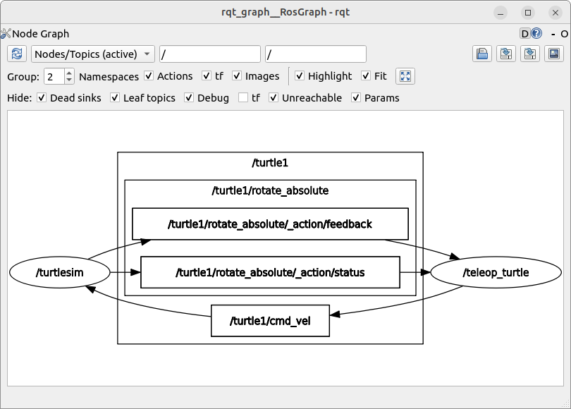
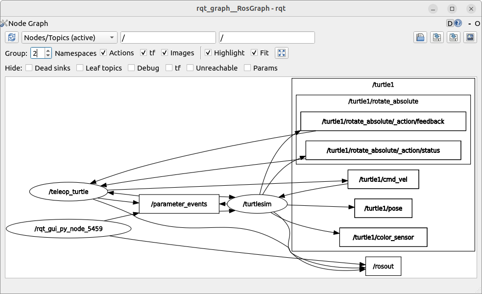
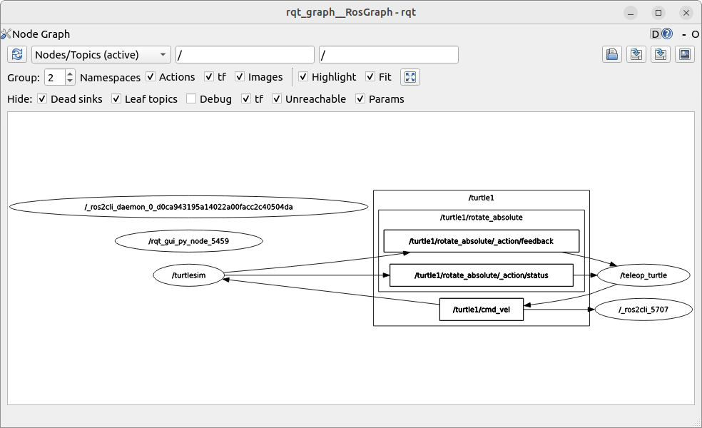

ROSRobot Operating System 2Robot Operating System 2 breaks complex systems down into many modular nodes. Topics are a vital element of the ROSRobot Operating System 2Robot Operating System 2 graph which act as a bus for nodes to exchange messages. A node can publish data to any number of topics and simultaneously have subscriptions to any number of topics. Topics are one of the main ways in which data is moved between nodes and therefore between different parts of the system. To begin, we start with a fresh new terminal (Ctrl + Alt + T) and type the following command:
bash
And of course we would like to control this turtle so we need to add the teleop node as well.
bash
Graphing the Topics
Throughout this tutorial, we will use rqt_graph to visualise the changing nodes and topics, as well as the
connections between them. To run rqt_graph , open a new terminal and enter the command:
bash
/turtlesim and /teleop . 
We should see the above nodes and topic, as well as two (2) actions around the periphery of the graph. If we hover our mouse over the topic in the centre, we’ll see the color highlighting.
The graph is depicting how the /turtlesim node and the /teleop_turtle node are communicating with each other over a topic.
The /teleop_turtle node is publishing data [220]
the keystrokes we enter to move the turtle around. to the /turtle1/cmd_vel topic, and the /turtlesim
node is subscribed to that topic to receive the data.
The highlighting feature of rqt_graph is very helpful when examining more complex systems with many nodes
and topics connected in many different ways.
ros2 topic list
Running the ros2 topic list command in a new terminal will return a list of all the topics currently active in the
system:
bash
/parameter_events
/rosout
/turtle1/cmd_vel
/turtle1/color_sensor
/turtle1/pose
Alternatively, running ros2 topic list -t will return the same list of topics, this time with the topic type appended in
brackets:
bash
/parameter_events [rcl_interfaces/msg/ParameterEvent]
/rosout [rcl_interfaces/msg/Log]
/turtle1/cmd_vel [geometry_msgs/msg/Twist]
/turtle1/color_sensor [turtlesim/msg/Color]
/turtle1/pose [turtlesim/msg/Pose]
These attributes, particularly the type, are how nodes know they’re talking about the same information
as it moves over topics. If there is any question as to where all these topics are in rqt_graph , we can uncheck all
the boxes under Hide:

ros2 topic echo To see the data being published on a topic, use:
bashros2 topic echo <topic_name>
Since we know that /teleop_turtle publishes data to /turtlesim over the /turtle1/cmd_vel topic, let’s use echo to introspect that
topic:
bashros2 topic echo /turtle1/cmd_vel
At first, this command won’t return any data. That’s because it’s waiting for /teleop_turtle to publish
something.
Return to the terminal where turtle_teleop_key is running and use the arrows to move the turtle around. Watch the
terminal where our echo is running at the same time, and we’ll see position data being published for every
movement we make:
linear:
x: 2.0
y: 0.0
z: 0.0
angular:
x: 0.0
y: 0.0
z: 0.0
---
Now return to rqt_graph and uncheck the Debug box.

/_ros2cli_5707 is the node created by the echo command we just ran. [221]
The number might be different. Now we can see
that the publisher is publishing data over the cmd_vel topic, and two (2) subscribers are subscribed to
it.
ros2 topic info Topics don’t have to only be one-to-one communication; they can be one-to-many, many-to-one, or many-to-many.
Another way to look at this is running:
bash
Type: geometry_msgs/msg/Twist
Publisher count: 1
Subscription count: 2
ros2 interface show Nodes send data over topics using messages. Publishers and subscribers must send and receive the same type of message to communicate.
The topic types we saw earlier after running ros2 topic list -t let us know what message type is used on each topic.
Recall that the cmd_vel topic has the type:
bash
This means that in the package geometry_msgs there is a msg called Twist.
Now we can run None on this type to learn its details. Specifically, what structure of data the message
expects.
bash
# This expresses velocity in free space broken into its linear and angular parts.
Vector3 linear
float64 x
float64 y
float64 z
Vector3 angular
float64 x
float64 y
float64 z
This tells us that the /turtlesim node is expecting a message with two (2) vectors, linear and angular, of three
elements each. If we recall the data we saw /teleop_turtle passing to /turtlesim with the echo command, it’s in the same
structure:
linear:
x: 2.0
y: 0.0
z: 0.0
angular:
x: 0.0
y: 0.0
z: 0.0
---
-
¶
- ROSRobot Operating System 2
Robot Operating System 2
- [220].
- the keystrokes we enter to move the turtle around.
- [221].
- The number might be different.